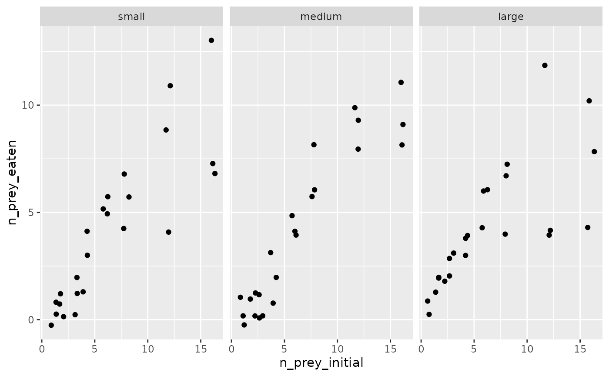
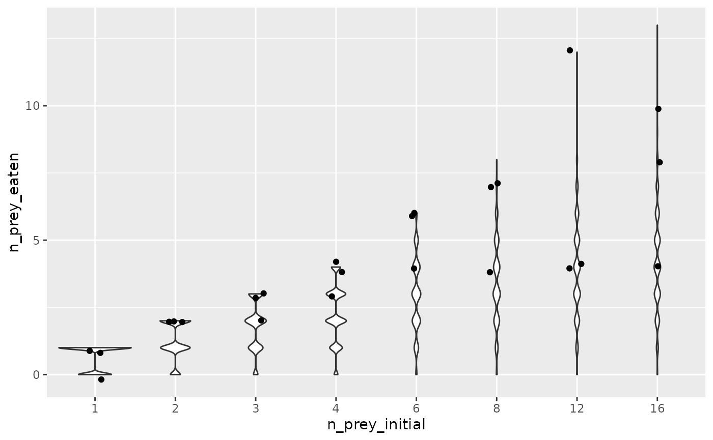
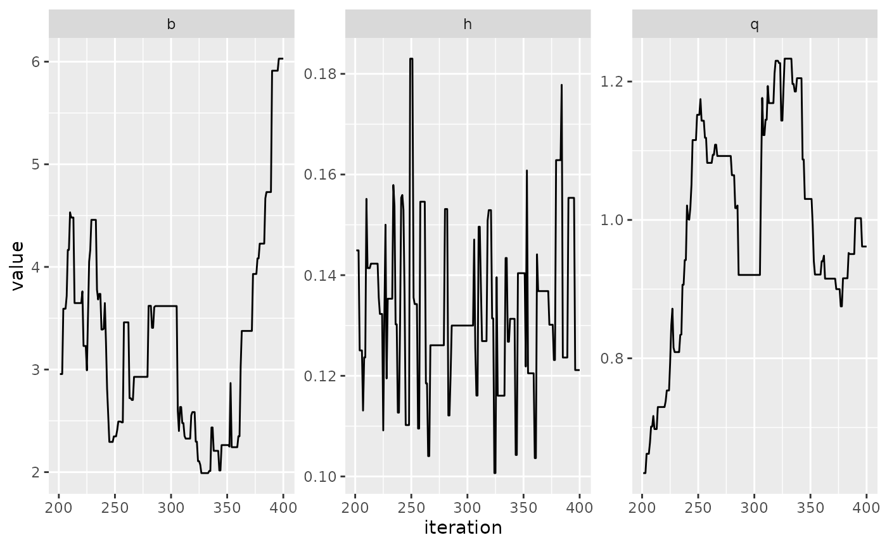

Bayesian fitting to real data
bayesian_fitting.Rmd
library(frbayes)
#>
#> Attaching package: 'frbayes'
#> The following object is masked from 'package:stats':
#>
#> simulate
library(ggplot2)
library(purrr)
library(dplyr)
#>
#> Attaching package: 'dplyr'
#> The following objects are masked from 'package:stats':
#>
#> filter, lag
#> The following objects are masked from 'package:base':
#>
#> intersect, setdiff, setequal, union
library(tidyr)In this notebook, we explore fitting a functional response model to a real dataset for Bythotrephes spp. (water fleas). We show how to fit the model using first the method of maximum likelihood, followed by a Bayesian method which uses Markov chain Monte Carlo.
Real data
We show how to fit a model to real data for Bythotrephes spp., water fleas, which prey on items of different sizes. We first load the data and visualise it.
# peak at data
glimpse(frbayes::bythotrephes)
#> Rows: 72
#> Columns: 4
#> $ n_prey_initial <int> 1, 1, 1, 3, 3, 3, 2, 2, 2, 4, 4, 4, 6, 6, 6, 8, 8, 8,…
#> $ n_prey_eaten <int> 1, 1, 0, 3, 2, 3, 2, 2, 2, 4, 3, 4, 6, 4, 6, 7, 7, 4,…
#> $ n_prey_remaining <int> 0, 0, 1, 0, 1, 0, 0, 0, 0, 0, 1, 0, 0, 2, 0, 1, 1, 4,…
#> $ size <fct> large, large, large, large, large, large, large, larg…
# plot by prey size
frbayes::bythotrephes %>%
ggplot(aes(x = n_prey_initial, y = n_prey_eaten)) +
geom_jitter(height = 0.3) +
facet_wrap(~size)
We fit a generalised Holling model to the “large” prey-size data using maximum likelihood estimation. This rate at which prey get eaten is given by the this expression:
where , and .
f_likelihood <- function(theta) {
parameters <- list(b = 1, h = 0.4, q = 0.01)
parameters[1] <- theta[1]
parameters[2] <- theta[2]
parameters[3] <- theta[3]
-log_probability(
parameters = parameters,
data = frbayes::bythotrephes %>% dplyr::filter(size == "large"),
model = model_generalised_holling(),
n_replicates = 1000
)
}
# use R's standard optim
fit <- optim(
c(1.5, 0.2, 0.1),
f_likelihood,
lower = c(0.01, 0.01, 0.01),
upper = c(5, 1, 1.5)
)
#> Warning in optim(c(1.5, 0.2, 0.1), f_likelihood, lower = c(0.01, 0.01, 0.01), :
#> bounds can only be used with method L-BFGS-B (or Brent)
# output pars
b <- fit$par[1]
h <- fit$par[2]
q <- fit$par[3]
print(paste0("b = ", b, ", h = ", h, ", q = ", q))
#> [1] "b = 1.49994877750089, h = 0.200027502012945, q = 0.100048128522654"We now examine the fit of model to data.
experimental_setup <- frbayes::bythotrephes %>%
filter(size == "large") %>%
group_by(n_prey_initial) %>%
count() %>%
mutate(n_replicates = 10000) # choose a large number here to explore full predictive distribution
# generate synthetic data at max likelihood estimates
mle_parameters <- list(b = b, h = h, q = q)
df_sim <- simulate_study(
data = experimental_setup,
time_max = 1,
model = model_generalised_holling(),
parameters = mle_parameters
)
# plot
frbayes::bythotrephes %>%
filter(size == "large") %>%
ggplot(aes(x = as.factor(n_prey_initial), y = n_prey_eaten)) +
geom_violin(data = df_sim) +
geom_jitter(height = 0.2, width = 0.1) +
xlab("n_prey_initial")
Bayesian fitting
We can also fit the model in a Bayesian framework, using the random walk Metropolis algorithm – the oldest and simplest variant of Markov chain Monte Carlo (MCMC) algorithm. We could use any package which takes as input a log-probability function to run MCMC; here we provide code for Metropolis-Hastings.
To use this algorithm, we also need to specify priors on the parameters, which here, we specify as , and .
log_posterior <- function(parameters) {
b <- parameters$b
h <- parameters$h
q <- parameters$q
log_prior <- (
if_else(b < 0 | b > 10, -Inf, 1 / 10) +
if_else(h < 0 | h > 1, -Inf, 1) +
if_else(q < 0 | q > 2, -Inf, 1 / 2)
)
if (log_prior == -Inf) {
return(-Inf)
}
log_likelihood <- log_probability(
parameters = parameters,
data = frbayes::bythotrephes %>% dplyr::filter(size == "large"),
model = model_generalised_holling(),
n_replicates = 1000
)
log_likelihood + log_prior
}
propose_parameters <- function(parameters_current, step_sizes) {
b <- parameters_current$b
h <- parameters_current$h
q <- parameters_current$q
b_p <- rnorm(1, b, step_sizes$b)
h_p <- rnorm(1, h, step_sizes$h)
q_p <- rnorm(1, q, step_sizes$q)
list(b = b_p, h = h_p, q = q_p)
}
step_accept_reject <- function(parameters_current, step_sizes) {
parameters_proposed <- propose_parameters(parameters_current, step_sizes)
log_p_current <- log_posterior(parameters_current)
log_p_proposed <- log_posterior(parameters_proposed)
log_r <- log(runif(1))
if (log_r < (log_p_proposed - log_p_current)) {
parameters_new <- parameters_proposed
} else {
parameters_new <- parameters_current
}
parameters_new
}
mcmc <- function(n_iterations, parameters_initial, step_sizes) {
df <- data.frame(iteration = rep(NA, (n_iterations + 1))) %>%
mutate(
b = NA,
h = NA,
q = NA
)
df$iteration[1] <- 0
df$b[1] <- parameters_initial$b
df$h[1] <- parameters_initial$h
df$q[1] <- parameters_initial$q
parameters_current <- parameters_initial
for (i in 1:n_iterations) {
parameters_new <- step_accept_reject(parameters_current, step_sizes)
df$iteration[i + 1] <- i
df$b[i + 1] <- parameters_new$b
df$h[i + 1] <- parameters_new$h
df$q[i + 1] <- parameters_new$q
parameters_current <- parameters_new
}
df
}
# run MCMC - takes a few minutes
max_iterations <- 400
chain <- mcmc(
n_iterations = max_iterations,
list(b = 5, h = 0.17, q = 1),
list(b = 0.5, h = 0.05, q = 0.05)
)
# print acceptance rate
mean(diff(chain$b) != 0)
#> [1] 0.34
# plot results
chain %>%
pivot_longer(c(b, h, q)) %>%
filter(iteration > max_iterations / 2) %>% # remove warm-up iterations
ggplot(aes(x = iteration, y = value)) +
geom_line() +
facet_wrap(~name, scales = "free")
Here, clearly more iterations are necessary in order to obtain convergence. This is mainly due to the model being relatively complicated relative to the relatively few data points being used to fit it.